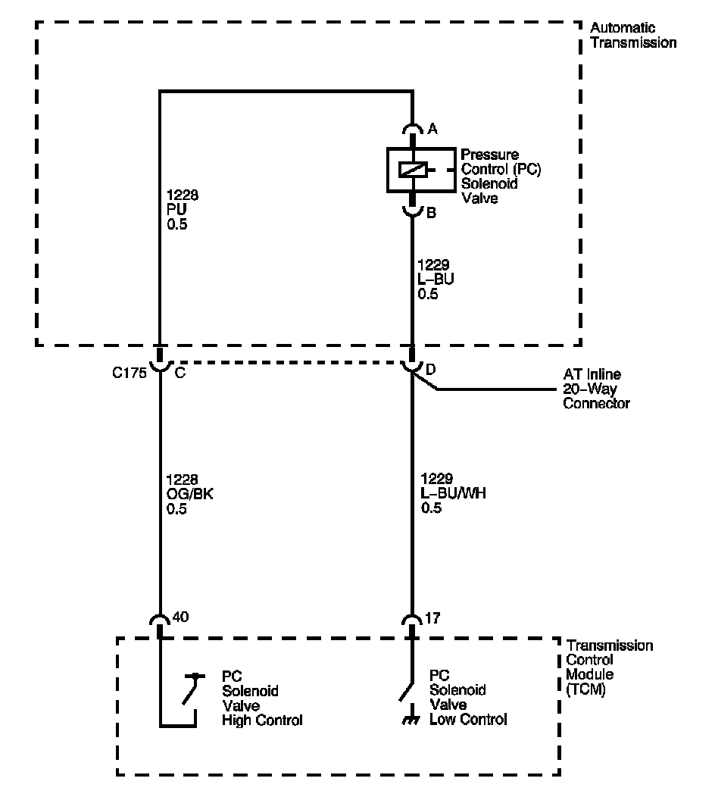

4L60-E / 4L65-E / 4L70-E Automatic Transmission
DTC P0961

Circuit Description
The pressure control (PC) solenoid valve is an electronic device that regulates transmission line pressure based on the current flow through its coil winding. The magnetic field produced by the coil moves the solenoid's internal valve which varies pressure to the pressure regulator valve. The transmission control module (TCM) controls the PC solenoid valve by applying a varying amount of amperage to the solenoid. The applied amperage can vary from 0.1-1.1 amps. Low amperage, 0.1 amp, indicates high line pressure. High amperage, 1.1 amps, indicates low line pressure. The duty cycle of the PC solenoid valve is expressed as a percentage of energized ON time. Zero percent indicates zero ON time, non-energized, or no current flow. Approximately 60 percent at idle indicates maximum ON time, energized, or high current flow. The TCM determines the appropriate line pressure for a given load by comparing the throttle position sensor voltage, the engine speed and other inputs.
When the TCM detects a continuous open or short to ground in the PC solenoid valve circuit, then DTC P0961 sets. DTC P0961 is a type C DTC.
DTC Descriptor
This diagnostic procedure supports the following DTC:
DTC P0961 Line Pressure Control (PC) Solenoid System Performance
Conditions for Running the DTC
^ The system voltage is 8-18 volts.
^ The engine is running.
Conditions for Setting the DTC
The PC solenoid valve duty cycle reaches its high limit, approximately 95 percent, or low limit, approximately 2 percent.
Action Taken When the DTC Sets
^ The TCM does not request the engine control module (ECM) to illuminate the malfunction indicator lamp (MIL).
^ The TCM records the operating conditions when the Conditions for Setting the DTC are met. The TCM records this information as a Failure Record.
^ The TCM commands maximum line pressure.
^ The TCM freezes transmission adaptive functions.
^ The TCM stores DTC P0961 in TCM history.
Conditions for Clearing the DTC
^ The TCM clears the DTC from TCM history if the vehicle completes 40 warm-up cycles without a non-emission related diagnostic fault occurring.
^ A scan tool can clear the DTC.
Diagnostic Aids
DTC P0961 may set under low voltage conditions caused by high electrical system demands.
Test Description
The numbers below refer to the step numbers on the diagnostic table.
2. This step tests the ability of the TCM to command the PC solenoid valve.
3. This step tests the PC solenoid valve and automatic transmission (AT) wiring harness assembly for incorrect resistance.